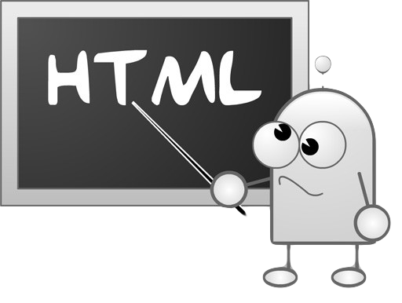
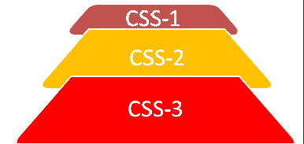

What is the field of the web and its basics

Web development: is the work involved in developing a Web site for the Internet or an intranet . Web development can range from developing a simple single static page of plain text to complex Web-based Internet applications , electronic businesses, and social network services.
-
The web or any other internet page we open it consists of three layers:
- The first layer: It is the component layer, which is made in HTML.
- The second layer: friendly for the colors and aesthetics, which is in CSS.
- The third layer: Friendly about the page interaction with the user and is in JavaScript.
What do you need to create your first page?
-->You should learn html, css and javascript.
What is HTML
HTML (HyperText Markup Language): is the most basic building block of the Web. It defines the meaning and structure of web content. Other technologies besides HTML are generally used to describe a web page's (CSS) or (JavaScript).
HTML is not a programming language, but a structured language in English, the markup language and registration data, the process of data processing, go ahead, just organize or structure.
HTML uses "markup" to annotate text, images, and other content for display in a Web browser. HTML markup includes special "elements" such as head ,body ,header ,footer ,p ,section ,video and many others
What is CSS

Cascading Style Sheets (CSS) is a stylesheet language used to describe the presentation of a document written in HTML. CSS describes how elements should be rendered on screen, on paper, in speech, or on other media.
CSS among the core languages of the open Web and is standardized across Web browsers . Previously development of various parts of CSS specification was done synchronously, which allowed versioning of the latest recommendation. You might have heard about CSS1, CSS2.1, CSS3. However, CSS4 has never become an official version.
What is JavaScript
JS: is a programming language that conforms to the ECMAScript specification. JavaScript is high-level, often just-in-time compiled, and multi-paradigm. It has curly-bracket syntax, dynamic typing, prototype-based object-orientation, and first-class functions.

Alongside HTML and CSS, JavaScript is one of the core technologies of the World Wide Web. JavaScript enables interactive web pages and is an essential part of web applications. The vast majority of websites use it for client-side page behavior, and all major web browsers have a dedicated JavaScript engine to execute it.